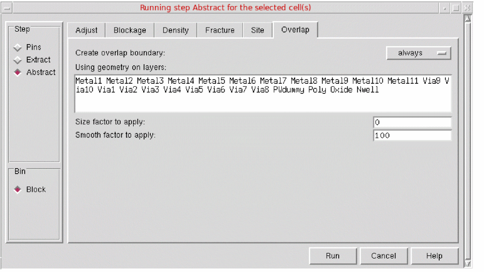

Creating an Overlap Boundary
The overlap boundary is a detailed boundary used by placement tools to test whether cells overlap. Unlike the PR boundary, which is always rectangular, the overlap boundary can be a rectilinear polygon. This helps the placement tools achieve better placement density for certain types of standard cells and rectilinear blocks.
To create an overlap boundary:
-
Choose Flow – Abstract, and click the Overlap tab in the Running step Abstract for the selected cell(s) form.
The options on this tab control whether Abstract Generator is to update the overlap boundary geometry. - Use the Create overlap boundary option to specify whether Abstract Generator should create an overlap boundary.
- In the Using geometry on layers field, specify the layers to be used in the overlap boundary calculation. The boundary is drawn so that it encloses all the geometry found on these layers.
- In Size factor to apply, specify (in microns) the value by which an overlap layer is to be increased.
- In Smooth factor to apply, specify the value that controls the shape of the overlap layer that is produced.
- Click Run.
An overlap boundary is created as per the specifications
Creating an Overlap Layer in OpenAccess
As there is no concept of an overlap layer in OpenAccess, Abstract Generator creates the overlap shape on the PR boundary layer. If you export LEF for the cellview, the overlap shape is correctly written to the OVERLAP section.
If you create or update the PR boundary by using the options on the Boundary Tab and then create an overlap layer by using the options on the Overlap tab, the PR boundary is destroyed and replaced with the overlap shape.
Troubleshoot OAToolbox Issues
You can face the following issues while using open access toolbox in Abstract Generator.
Cell name: Row name in view viewName has a missing property propertyName and will not be converted.
Cell name: Row name in view viewName references a site def siteDefName which has not been defined in the technology database.
Couldn’t open master libName, cellName, viewName, referenced in cellview libName, cellName, viewName.
Related Topics
Return to top